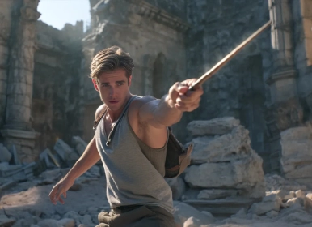
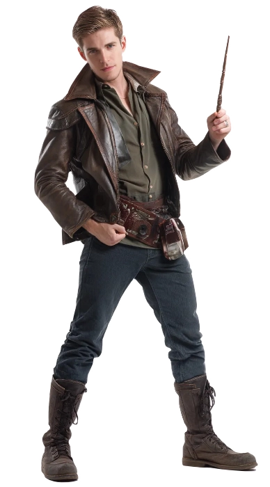
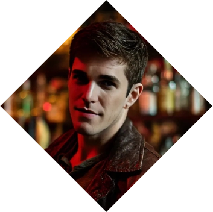
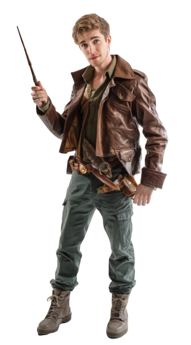

Martin Covarrubias
Martin Covarrubias
The Cursebreaker
Martin Apolodoro Covarrubias, a spirited franco-español wizard, is the first curse-breaker to emerge from the prestigious Covarrubias lineage—an old magical family steeped in healing traditions and whispered Veela ancestry. Defying expectations, Martin followed his passion for offensive enchantments and ancient magical puzzles, earning early accolades at Beauxbâtons for his daring dueling style and quick-thinking heroism during a dark creature incursion on school grounds.
Now a rising talent at Rompesellos Inc., Martin specializes in neutralizing curses within ancient tombs and arcane relics across the globe. With a charismatic presence, instinctive magical flair, and a rare wand suited for duels against the Dark Arts, he has already gained a reputation for emotional insight and battlefield improvisation. Though still early in his career, Martin’s courage, charm, and creativity make him one of the most promising young curse-breakers in the magical world. ❧
Plot Hooks.
Tomb Riding Martin Covarrubias often stumbles upon cursed relics tied to hidden legacies, forbidden magic, or long-buried secrets. His discoveries could spark political intrigue, awaken ancient spirits, or trigger magical plagues, forcing him into roles as both solver and survivor.Signature Motif.
Observation. Martin’s defining trait is his sharp observation and quick thinking, allowing him to read magical traps, social cues, or dueling opponents in seconds. Known for improvising clever spell combinations on the fly, his brilliance often shines brightest in chaotic, high-stakes moments.Perfect for...
Adventure plots. Martin thrives in adventure-mystery tales with magical archaeology, blending danger with wit. Genres like dark fantasy or magical noir suit him, especially stories exploring lost civilizations, ethical dilemmas in magic use, or reconciling personal legacy with chosen destiny.Goal
Discovery.
Martin seeks to uncover the origins of a mysterious curse he encountered during an expedition in Egypt—an incantation with no known lineage in modern magical theory. Understanding its purpose and source could unlock ancient magical knowledge or reveal forgotten branches of magical evolution.
obstacle
Politics.
The spell is tied to a lost magical language suppressed by the International Mage Confederation due to its volatile nature. As Martin digs deeper, he faces pressure from political bodies warning him to stop, while deciphering the spell risks corrupting his own magic or mind.«I'm gonna run this nothing town.»
Personal Data

Martin Apolodoro Covarrubias
Name
30
Age
09/Dec/1995
DOB
Beauxbatons
Wizarding School
Brown
Hair
Green
Eye color
8", Yew, Unyielding
Wand
White
Ethnicity
Spanish
Nationality
Explorer
Role
1.90m
Height
100 kg
Weight
English, French and Spanish
Languages
Male
Gender
Homosexual
Preference
Cursebreaker
Profession
Top
Position
7" / 5"
length / Girth
Eric Masip
Faceclaim
Horse
Patronus
ENTP
MBTI
Character sheet
Attributes
Distinctions
Roles
House
Luminous

Nature
Stubborn
Demeanor
Visionary


Insightful
Contrarian
Open-minded
Thoughtful
Creative
Obstinate
Provocative
Intrusive
Disruptive
Argumentative
Contrarian
Open-minded
Thoughtful
Creative
Obstinate
Provocative
Intrusive
Disruptive
Argumentative
Determined
Inspirational
Creative
Optimistic
Persuasive
Idealistic
Fanatical
Impractical
Naïve
Irrational
Inspirational
Creative
Optimistic
Persuasive
Idealistic
Fanatical
Impractical
Naïve
Irrational
Vigueur

Raison
Charisme
Magie

Courage
🙪
Specialties
Good Looking
Insightful
Duelist
Combattant
Clerc

Cabaliste
Cambrioleur
Chanteur
Backgrounds



Signature Assets
Creative Combos
Add a third dice in the result when using Magie and in exchange create a D8 complication.
Veela's Blood
Up the category of your Charisme dice but in exchange reduce the category of your Magie dice.
Unique Wand
When facing the Dark Arts you can add a D6 to the roll.
Other Assets
Potions
A magical sack where he usually stores most of the potions required for the tasks. He just needs to call upon it using Accio to make it appear as a D6 advantage, if required.
Relationships
A character that is constantly in Martin's life either as a friend or a family. More often than not they know of his Nature. Writers are encouraged to take up this role if required.
Rompesellos Inc
The company he works for, which offers him a steady salary and tons of adventures. The salary is used to pay his rent in Madrid, in the equivalent to the Diagon Alley of the city.